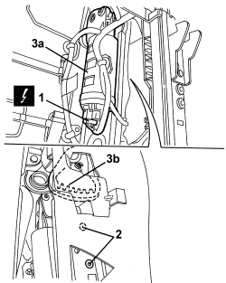

7045J33 FRONT SEAT SWINGING MOTOR, (ONE) LH OR RH - R R AFTER CHECKING THE ELECTRIC CIRCUIT
- Path
- Procedures > 70 FITTINGS > 7045 FRONT SEATS > 7045J FRONT SEAT ELECTRIC MOVEMENTS > 7045J33 FRONT SEAT SWINGING MOTOR, (ONE) LH OR RH - R R AFTER CHECKING THE ELECTRIC CIRCUIT
- Kind
- repair procedure (removal / refitting; the operation number is the code)
- Applies to
- all engines; all production periods; only with equipment: Electric seats
- Interactive page
- https://sloeber94.github.io/elrnDB/alfa/159/en/#/939005572
Applies to: all engines; all production periods; only with equipment: Electric seats
 Removing
Removing
 Refitting
Refitting- Raise the seat until it is in the end of travel position.
Op. 7045A10 FRONT SEAT (ONE), LEFT OR RIGHT - R.R.
Op. 7045A43 FRONT SEAT EXTERIOR GUARD (ONE), LEFT OR RIGHT - R.R
1. Disconnect the electrical connection.
Description | Component |
|---|---|
LEFT FRONT SEAT FRONT HEIGHT ADJUSTMENT MOTOR | |
RIGHT FRONT SEAT FRONT HEIGHT ADJUSTMENT MOTOR |
2. Undo the motor fixing bolts.
3. Recover motor (3a), releasing from seat structure toothed sector (3a).

Applies to: all engines; all production periods; only with equipment: Electric seats
Refitting
Removing- Check that the motor is not damaged.
- Posiition the motor and do up seat structure toothed sector.
- Tighten the bolts fixing the motor.
Op. 7045A43 FRONT SEAT EXTERIOR GUARD (ONE), LEFT OR RIGHT - R.R
Op. 7045A10 FRONT SEAT (ONE), LEFT OR RIGHT - R.R.
- Check the motor works correctly along the swing travel.
Topics linked from this page (4)
- 7045A10 FRONT SEAT (ONE), LEFT OR RIGHT - R.R.
- 7045A43 FRONT SEAT EXTERIOR GUARD (ONE), LEFT OR RIGHT - R.R
- N126 LEFT FRONT SEAT FRONT HEIGHT ADJUSTMENT MOTOR
- N129 RIGHT FRONT SEAT FRONT HEIGHT ADJUSTMENT MOTOR